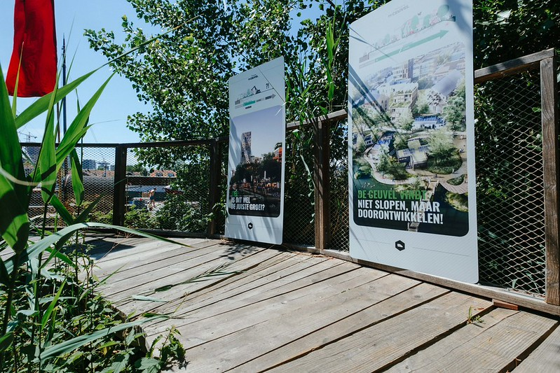

Teken de petitie
Laat de gemeente zien dat Amsterdam De Ceuvel wil behouden.
Aan de gemeenteraad en het college van Amsterdam
Wij constateren dat
- De Ceuvel een levende proeftuin is, waar duurzaamheid, ondernemerschap en gemeenschap hand in hand gaan;
- de waarden waarvoor de gemeente staat, zoals duurzaamheid, participatie en innovatie, hier dagelijks in praktijk worden gebracht;
- het bestemmingsplan gerealiseerd kan worden zonder vanaf nul te beginnen;
- een één-op-één gunning juridisch tot de mogelijkheden behoort.
En verzoeken de gemeente
- De Ceuvel te behouden en samen verder te ontwikkelen, in plaats van te slopen.
Ondertekenen gaat via petities.nl, een onafhankelijke stichting. Je bevestigt je handtekening per e-mail, zodat elke stem telt. Wij bieden de petitie aan de gemeenteraad aan.

Wil je meer doen?
Word ambassadeur en deel wat De Ceuvel voor jou betekent.